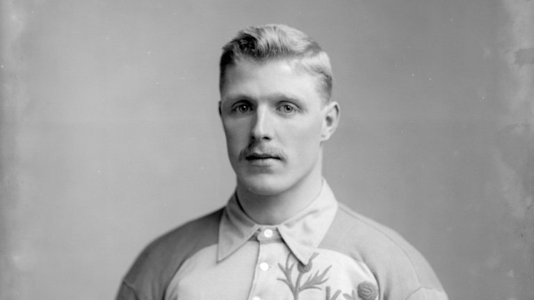
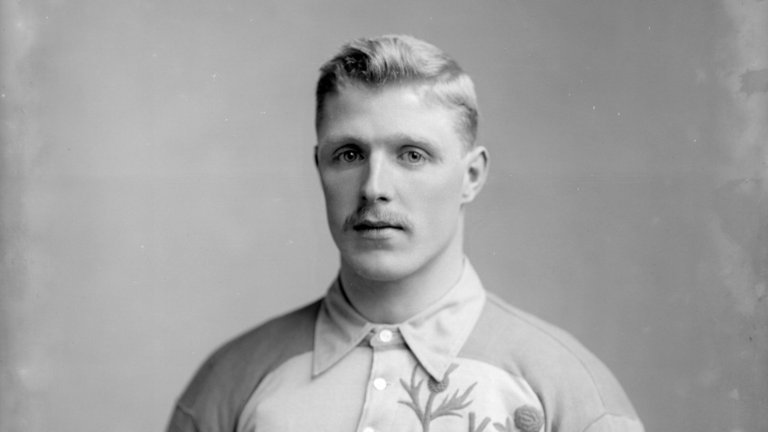

1964
1977
Liverpool FC Founded
Liverpool Football Club is founded by John Houlding.

First League Title
Liverpool wins its first Football League title.
Liverpool Football Club is founded by John Houlding.
Liverpool wins its first Football League title.
